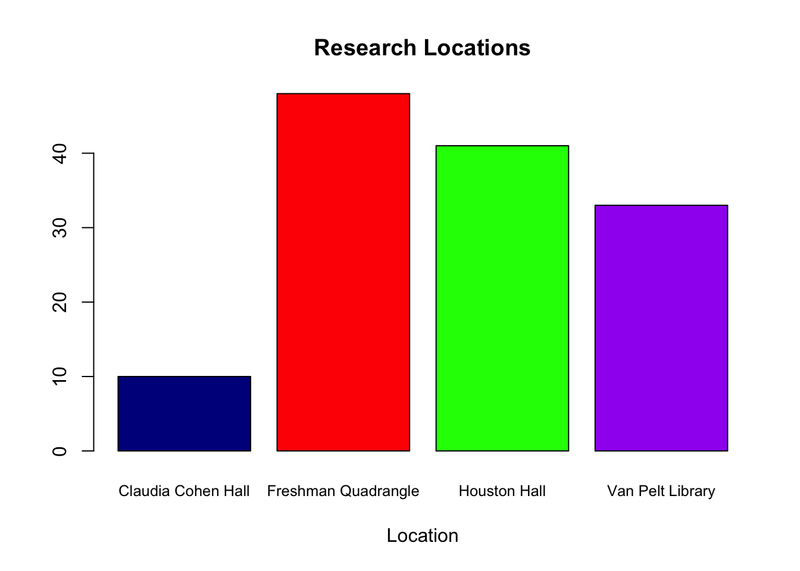

Our research team recruited 132 participants from across the University of Pennsylvania between November 14th and November 30th. Originally we planned to recruit primarily from the University of Pennsylvania’s freshman quadrangle due to its convenient nature and concentration of potential participants. However, after exhausting the potential participants in this area, we decided to expand our experiment to other recruitment locations. Therefore, in addition to the freshmen dorms, we also conducted the experiment in study rooms at Van Pelt Library, open study areas in Houston Hall and Arch Cafe, and a reserved room in Claudia Cohen Hall. See the table below for a complete breakdown of participants based on recruitment location.

We recruited participants primarily through face-to-face solicitation methods. Recruitment and subsequent participation occurred on multiple weekdays and at a variety of times (e.g. morning, afternoon, and evening) in order to control for any potential day-of-week or time-of-day effects. We chose not to run the experiment on weekends, as we believed participant availability would be limited on weekends. More importantly, we hypothesized that student participants are likely to make different choices on weekends relative to weekdays (for example, weekend hangover effects could confound our results by mimicking a state of cognitive depletion).
Ultimately, we ended up recruiting 132 students from all colleges and a variety of graduate schools at the University of Pennsylvania (64% female; mean age = 20.29; 50% freshman, 25% graduate students). Although our data collection process took place at different locations across campus, the demographic characteristics of our sample are consistent across these locations.
Independent variables
Our two independent variables of interest were depletion (whether participants are depleted or not) and framing (whether participants are in a loss or gain frame). Additionally, we were also interested in identifying whether there was an interaction effect between these two variables.
Dependent variables
In order to measure the degree of cheating behavior in the various treatments, we focused on two dependent variables of interest. The first dependent variable (DV1) is the binary choice of cheating versus not cheating. Participants were considered to have cheated if the self-reported number of correctly solved matrices was higher than the actual number of correctly solved matrices (calculated by researchers after the experiment). These observations were coded “1” for the binary variable cheating. Conversely, participants were coded “0” if there was no difference or a negative difference between the self-reported number of correctly solved matrices and the actual number of correctly solved matrices. Our second dependent variable (DV2) measured the magnitude of cheating, represented by the stated performance, which again was the difference between the reported number of completed matrices and the actual number of completed matrices.
For our analysis, we used nonparametric tests because they do not require any specific form for the distribution of the population from which the sample comes from. This is a safe choice with our smaller sample size and unknown population parameters. Moreover, our data might be skewed with overrepresented observations with the value “0”; non-parametric tests take care of this concern. We used a Mann-Whitney U test to analyze the main treatment effects between the two groups and a Kruskal Wallis test to examine the interaction effect within all four treatment groups.